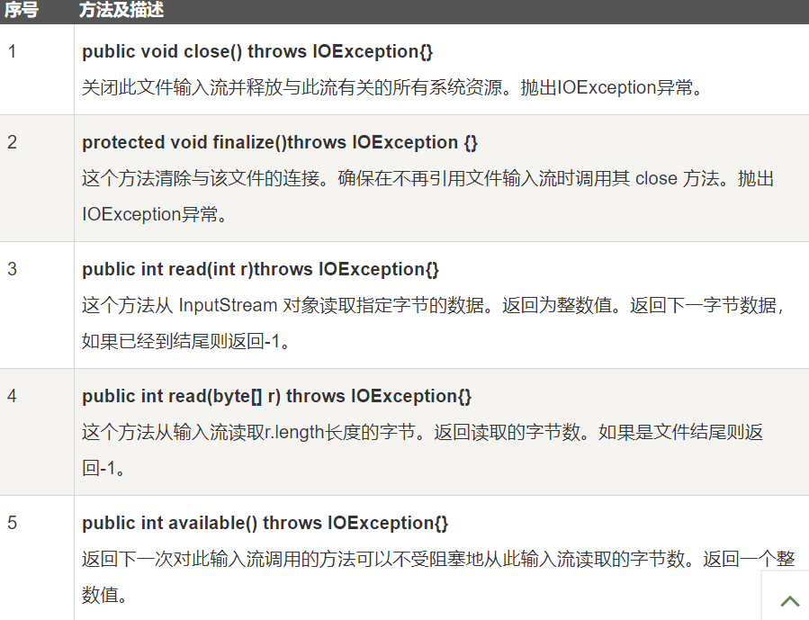
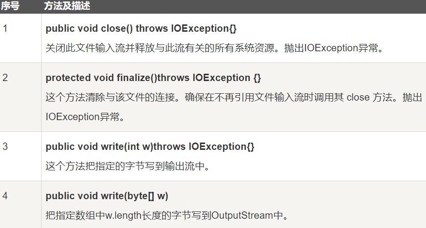
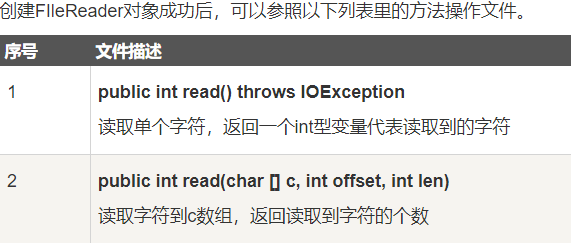
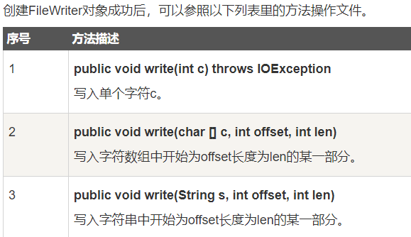

Java 流(Stream)、文件(File)和IO
Java.io 包几乎包含了所有操作输入、输出需要的类。所有这些流类代表了输入源和输出目标。
Java.io 包中的流支持很多种格式，比如：基本类型、对象、本地化字符集等等。
一个流可以理解为一个数据的序列。输入流表示从一个源读取数据，输出流表示向一个目标写数据。
Java 为 I/O 提供了强大的而灵活的支持，使其更广泛地应用到文件传输和网络编程中。
读取控制台输入
Java 的控制台输入由 System.in 完成。
为了获得一个绑定到控制台的字符流，你可以把 System.in 包装在一个 BufferedReader 对象中来创建一个字符流。
下面是创建 BufferedReader 的基本语法：
BufferedReader br = new BufferedReader(new InputStreamReader(System.in));
BufferedReader 对象创建后，我们便可以使用 read() 方法从控制台读取一个字符，或者用 readLine() 方法读取一个字符串。
从控制台读取多字符输入
从 BufferedReader 对象读取一个字符要使用 read() 方法，它的语法如下：
int read( ) throws IOException
每次调用 read() 方法，它从输入流读取一个字符并把该字符作为整数值返回。 当流结束的时候返回 -1。该方法抛出 IOException。
下面的程序示范了用 read() 方法从控制台不断读取字符直到用户输入 “q”。
1 | //使用 BufferedReader 在控制台读取字符 |
1 | 输入字符, 按下 'q' 键退出。 |
从控制台读取字符串
从标准输入读取一个字符串需要使用 BufferedReader 的 readLine() 方法。
它的一般格式是：
String readLine( ) throws IOException
下面的程序读取和显示字符行直到你输入了单词”end”。
1 | //使用 BufferedReader 在控制台读取字符 |
1 | Enter lines of text. |
JDK 5 后的版本我们也可以使用 Java Scanner 类来获取控制台的输入。
控制台输出
在此前已经介绍过，控制台的输出由 print( ) 和 println() 完成。这些方法都由类 PrintStream 定义，System.out 是该类对象的一个引用。
PrintStream 继承了 OutputStream类，并且实现了方法 write()。这样，write() 也可以用来往控制台写操作。
PrintStream 定义 write() 的最简单格式如下所示：
void write(int byteval)
该方法将 byteval 的低八位字节写到流中。
下面的例子用 write() 把字符 “A” 和紧跟着的换行符输出到屏幕：
WriteDemo.java 文件代码：1
2
3
4
5
6
7
8
9
10
11import java.io.*;
//演示 System.out.write().
public class WriteDemo {
public static void main(String args[]) {
int b;
b = 'A';
System.out.write(b);
System.out.write('\n');
}
}
1 | 运行以上实例在输出窗口输出 "A" 字符 |
注意：write() 方法不经常使用，因为 print() 和 println() 方法用起来更为方便。
读写文件
如前所述，一个流被定义为一个数据序列。输入流用于从源读取数据，输出流用于向目标写数据。
下图是一个描述输入流和输出流的类层次图。

FileInputStream
该流用于从文件读取数据，它的对象可以用关键字 new 来创建。
有多种构造方法可用来创建对象。
可以使用字符串类型的文件名来创建一个输入流对象来读取文件：
InputStream f = new FileInputStream("C:/java/hello");
也可以使用一个文件对象来创建一个输入流对象来读取文件。我们首先得使用 File() 方法来创建一个文件对象：1
2File f = new File("C:/java/hello");
InputStream out = new FileInputStream(f);
创建了InputStream对象，就可以使用下面的方法来读取流或者进行其他的流操作。

FileOutputStream
该类用来创建一个文件并向文件中写数据。
如果该流在打开文件进行输出前，目标文件不存在，那么该流会创建该文件。
有两个构造方法可以用来创建 FileOutputStream 对象。
使用字符串类型的文件名来创建一个输出流对象：
OutputStream f = new FileOutputStream("C:/java/hello")
也可以使用一个文件对象来创建一个输出流来写文件。我们首先得使用File()方法来创建一个文件对象：1
2File f = new File("C:/java/hello");
OutputStream f = new FileOutputStream(f);
创建OutputStream 对象完成后，就可以使用下面的方法来写入流或者进行其他的流操作。

1 | import java.io.*; |
上面的程序首先创建文件test.txt，并把给定的数字以二进制形式写进该文件，同时输出到控制台上。
以上代码由于是二进制写入，可能存在乱码，你可以使用以下代码实例来解决乱码问题：
1 | //文件名 :fileStreamTest2.java |
文件和I/O
还有一些关于文件和I/O的类
Java FileReader类
FileReader类从InputStreamReader类继承而来。该类按字符读取流中数据。可以通过以下几种构造方法创建需要的对象。
在给定从中读取数据的 File 的情况下创建一个新 FileReader。
FileReader(File file)
在给定从中读取数据的 FileDescriptor 的情况下创建一个新 FileReader。
FileReader(FileDescriptor fd)
在给定从中读取数据的文件名的情况下创建一个新 FileReader。
FileReader(String fileName)

Java FileWriter类
leWriter 类从 OutputStreamWriter 类继承而来。该类按字符向流中写入数据。可以通过以下几种构造方法创建需要的对象。
在给出 File 对象的情况下构造一个 FileWriter 对象。
FileWriter(File file)
在给出 File 对象的情况下构造一个 FileWriter 对象。
FileWriter(File file, boolean append)
参数：
file：要写入数据的 File 对象。
append：如果 append 参数为 true，则将字节写入文件末尾处，相当于追加信息。如果 append 参数为 false, 则写入文件开始处。
构造与某个文件描述符相关联的 FileWriter 对象。
FileWriter(FileDescriptor fd)
在给出文件名的情况下构造 FileWriter 对象，它具有指示是否挂起写入数据的 boolean 值。
FileWriter(String fileName, boolean append)

1 | import java.io.*; |
1 | This |
Java中的目录
创建目录：
File类中有两个方法可以用来创建文件夹：
mkdir( )方法创建一个文件夹，成功则返回true，失败则返回false。失败表明File对象指定的路径已经存在，或者由于整个路径还不存在，该文件夹不能被创建。
mkdirs()方法创建一个文件夹和它的所有父文件夹。
1 | import java.io.File; |
编译并执行上面代码来创建目录 “/tmp/user/java/bin”。
注意： Java 在 UNIX 和 Windows 自动按约定分辨文件路径分隔符。如果你在 Windows 版本的 Java 中使用分隔符 (/) ，路径依然能够被正确解析。
读取目录
一个目录其实就是一个 File 对象，它包含其他文件和文件夹。
如果创建一个 File 对象并且它是一个目录，那么调用 isDirectory() 方法会返回 true。
可以通过调用该对象上的 list() 方法，来提取它包含的文件和文件夹的列表。
下面展示的例子说明如何使用 list() 方法来检查一个文件夹中包含的内容：
1 | import java.io.File; |
1 | 目录 /tmp |
删除目录或文件
删除文件可以使用 java.io.File.delete() 方法。
以下代码会删除目录 /tmp/java/，需要注意的是当删除某一目录时，必须保证该目录下没有其他文件才能正确删除，否则将删除失败。
1 | import java.io.File; |